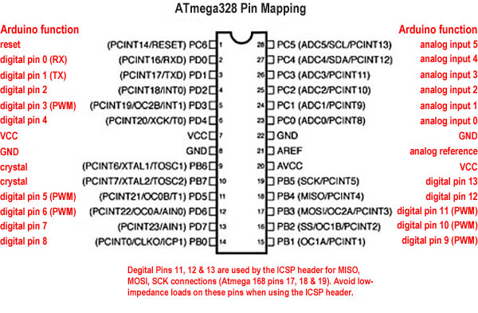
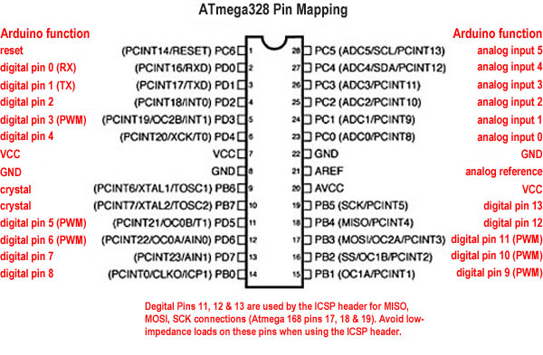

Scarica il documento PDF
L’ATMega328p è il microcontrollore utilizzato dall’Arduino UNO, questo permette di usare codice Arduino in un progetto senza avere una intera e ingombrante scheda.
Per utilizzare l’ATMega328p sono necessari un oscillatore al quarzo da 16Mhz, una tensione di alimentazione di 5V e una connessione seriale.

 

Caricare il bootloader
- Caricare sull’Arduino UNO lo sketch File-->Esempi-->ArduinoISP
- Collegare l’Atmega e l’Arduino come da schema.
- Selezionare Strumenti-->Programmatore-->ArduinoAsISP
- Selezionare Strumenti-->Scheda-->Arduino Duemilanove(Atmega328)
- Selezionare Strumenti-->Scrivii il Bootloader
Caricare codice nell’AtMega328p
Per caricare del codice nell’Atmega328p è sufficiente inserirlo nell’Arduino UNO al posto dell’Atmega presente. Oppure collegando i pin RX, TX e RESET ai corrispondenti dell’Arduino UNO.
Link utili
Datasheet AtMega328p: http://www.atmel.com/images/atmel-8271-8-bit-avr-microcontroller-atmega48a-48pa-88a-88pa-168a-168pa-328-328p_datasheet_complete.pdf
AtmegaStandalone: https://www.arduino.cc/en/Tutorial/ArduinoToBreadboard